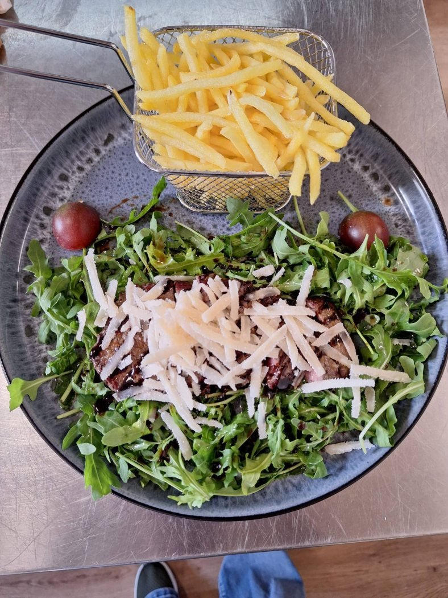

Chez Kryste · Reconvilier
La carte
Plats maison, petites faims, vins et boissons.
Parcourir la carte ↓
Consultez nos horaires
Du mardi au dimanche dès 10h00
À table
Notre carte
Un plat du jour est également proposé, renseignez-vous au comptoir.
Nos Plats
Nos plats sont servis avec une salade verte au buffet.
Accompagnement : légume, frites, pâtes ou riz.
Rumsteck de Bœuf
Sauce café de Paris
Entrecôte de Cheval
Sauce café de Paris
Tranche de Porc
25.50 CHFNature ou à la crème
Blanc de Poulet
26.- CHFNature ou à la crème
Filet de Saumon
30.- CHFNature ou sauce hollandaise
Sur demande 24h à l'avance
Tartare de Bœuf (Boucherie Carnata)
180g : 43.- CHFToast, beurre, frites ou salade
Cordon Bleu de Poulet
27.- CHFFromage à raclette, jambon, servi avec frites ou légume
Suggestion du Chef
Tagliata de Bœuf
Rumsteak de bœuf, roquette, copeaux de parmesan, vinaigre balsamique, huile d'olive, gros sel. Servi avec frites
Crêpes O'Tennis
21.50 CHFJambon, lard, fromage raclette, oignon, œuf
Les Petites Faims
Salade Verte
Salades Mêlée
Salade Buffet
9.50 CHFCrêpe au sucre
4.50 CHFCrêpe sucre Grand Marnier
9.80 CHFCrêpe Nutella
6.50 CHFCrêpe jambon
7.- CHFCrêpes jambon-fromage
8.- CHFCroque fromage
10.- CHFHot Dog
7.50 CHFHamburger
10.50 CHFCheeseburger
14.50 CHFPortion de frites
Assiette O'Tennis
26.- CHFAssortiment de charcuterie et fromages, 200g
Croque monsieur
12.- CHFJambon, fromage
Croque O'Tennis
14.- CHFJambon, fromage, œufs
Nos Pâtes
Penne Alfredo
19.- CHFJambon, oignon, ail, crème, persil
Tortellini à la crème
19.50 CHFOignon, ail, parmesan
Tagliatelle au Saumon
22.50 CHFOignon, ail, crème
Nos Sandwichs
- Jambon 7.- CHF
- Jambon-Fromage 8.50 CHF
- Thon 6.50 CHF
Carte des Boissons
Boissons chaudes
- Café 3.80 CHF
- Expresso / Ristretto 3.80 CHF
- Renverser 4.20 CHF
- Cappuccino 4.30 CHF
- Café O'Tennis (abricotine ou williamine, crème chantilly) 6.- CHF
- Chocolat chaud 4.50 CHF
- Ovomaltine 4.50 CHF
Thé et infusion
- Noir
- Thé vert
- Menthe
- Fruits rouges
- Herbes des Alpes
3.60 CHF, quel que soit le parfum
Boissons froides (2dl / 3dl / 5dl / 1L / 1,5L)
- Coca 3.- / 3.80 / 5.40 / — / 10.80 CHF
- Thé froid (pêche ou citron) 3.- / 3.80 / 5.40 / — / 10.80 CHF
- Romanette (limonade citron) 3.- / 3.80 / 5.40 / — / 10.80 CHF
- Grapefruit 3.- / 3.80 / 5.40 / — / 10.80 CHF
- Rivella rouge 3.- / 3.80 / 5.40 / 9.20 CHF
- Eau minérale (plate, mini bulle) 2.90 / 3.70 / 4.- / 9.20 CHF
- Jus de pomme 3.- / 3.80 / 5.40 / 9.20 CHF
- Coca Zéro 33cl 5.80 CHF
- Rivella bleu 33cl 5.70 CHF
- Sinalco 33cl 5.70 CHF
- Schweppes Tonic (20cl) 5.40 CHF
- Red Bull 5.20 CHF
- Focus 5.- CHF
Bières (2dl / 3dl / 5dl)
- Bière pression 3.20 / 4.20 / 6.50 CHF
- Panachée 3.20 / 4.20 / 6.50 CHF
- Panachée O'Tennis 3.20 / 4.20 / 6.50 CHF
- Bière sans alcool 33cl 4.20 CHF
Carte des Vins
Vin ouvert (1dl / 2dl / 3dl / 5dl)
- Rouge — Pinot Noir du Valais 5.80 / 11.60 / 17.40 / 28.60 CHF
- Rouge — Merlot Delea (Tessin) 5.10 / 10.20 / 15.30 / 25.50 CHF
- Rosé — Œil de Perdrix (Valais) 5.20 / 10.40 / 15.60 / 26.- CHF
- Rosé — Pinoron (Cortaillod) 3.60 / 7.20 / 10.80 / 17.80 CHF
- Blanc — Chasselas sur le chemin (Cortaillod) 4.80 / 9.60 / 14.40 / 23.80 CHF
- Blanc — Johannisberg (Valais) 5.50 / 11.- / 16.50 / 27.40 CHF
Apéritifs
- Blanc Cassis 7.50 CHF
- Apérol 10.- CHF
- San Bitter (10cl) 4.50 CHF
Martini et digestifs (2cl / 4cl)
- Martini Blanc 4cl : 8.50 CHF
- Ricard 2cl : 4.50 CHF / 4cl : 9.- CHF
- Appenzells 4cl : 5.50 CHF
- La Chaindon (Suze et Grapefruit) 4cl : 6.50 CHF
Jus et Nectar
- Ananas
- Orange
- Poire
- Multifruit
- Abricot
- Tomate
Verre de 20cl : 5.20 CHF
Sirop (Nos Sirop Morand)
- Grenadine
- Menthe
- Citron
2.80 CHF / 3.50 CHF / 4.90 CHF selon la taille du verre
Spiritueux, Liqueur et Eau de vie
Spiritueux et liqueurs (4cl)
- Vodka Blanc 7.50 CHF
- Rhum (Blanc Bacardi) 8.50 CHF
- Amaretto 7.50 CHF
- Grand Marnier 10.50 CHF
- Limoncello 6.50 CHF
Eau de vie
- Williamine 8.50 CHF
- Abricotine 8.50 CHF
- Pomme 5.50 CHF
- Grappa 8.20 CHF
On vous garde une place ?
Réserver une table
Vous venez à plusieurs ? Pensez à réserver par téléphone ou à nous prévenir sur place.
Tartare de bœuf et cordon bleu de poulet sur demande, 24 h à l’avance.